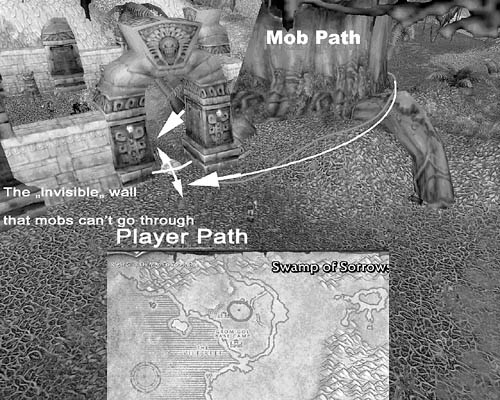
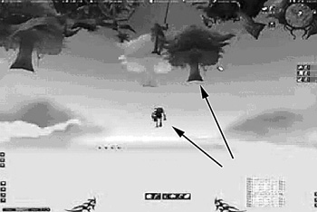

{% include JB/setup %}
{% raw %}
<div>
<a name="toppage" class="pcalibre calibre1"></a><table width="100%" border="0" cellspacing="0" cellpadding="0" class="sfbody"><tr valign="top" class="calibre2"><td class="calibre3"><a name="MainContent" class="pcalibre calibre1"></a><table width="95%" class="sfbody"><tr class="calibre2"><td class="pcalibre1 v"><!--Copyright (c) 2002 Safari Tech Books Online--><table width="100%" border="0" cellspacing="0" cellpadding="2" class="calibre4"><tr class="calibre2"><td valign="middle" class="v1 pcalibre1" height="5"></td></tr><tr class="calibre2"><td valign="middle" class="v1 pcalibre1"><table cellpadding="0" cellspacing="0" border="0" width="100%" class="calibre4"><tr class="calibre2"><td class="calibre6"><span class="calibre7"> </span>
                   
                  <span class="calibre7">   </span>
             <span class="calibre7"> </span></td></tr></table></td><td class="calibre8"/><td valign="middle" class="v2 pcalibre1"> 
           
          <span class="calibre7"><a target="_self" href="ch05lev1sec1.html" title="Previous section" class="pcalibre calibre1"></a></span>
				
				 
				
				<span class="calibre7"><a target="_self" href="ch05lev1sec3.html" title="Next section" class="pcalibre calibre1"></a></span></td></tr></table><div id="section" class="calibre15"><table width="100%" border="0" cellspacing="0" cellpadding="0" class="calibre4"><tr class="calibre2"><td valign="top" class="calibre8">Security Game Programming Networking Programming Greg Hoglund Gary McGraw Addison Wesley Professional Exploiting Online Games: Cheating Massively Distributed Systems<a name="ch05lev1sec2" class="pcalibre calibre1"></a>
<h3 id="title-IDALCFBD" class="docSection1Title">Pathing Bugs in Games</h3>
<p class="docText">Time-related bugs such as the race conditions and nutty state interactions that we describe earlier are not the only kinds of bugs in online games. Other categories of problems exist, too. One category—pathing bugs—is related to space in the virtual world.</p>
<p class="docText">Paths are the routes that monsters (mobs) take in the game. The game often pits your character against these monsters. Many of the monsters encountered in WoW can't do any damage to you unless they are standing right next to your character in virtual 3D space. Monsters that are handicapped in this way make easy prey for pathing exploits.</p>
<p class="docText">Here's how pathing exploits work. The gist of the tactic is to stand in a place where the monster can't get to, but at the same time close enough to <a name="iddle1196" class="pcalibre calibre1"></a><a name="iddle1237" class="pcalibre calibre1"></a><a name="iddle1416" class="pcalibre calibre1"></a><a name="iddle2126" class="pcalibre calibre1"></a><a name="iddle2129" class="pcalibre calibre1"></a><a name="iddle2180" class="pcalibre calibre1"></a>the monster that you can use a long-range attack of some kind to attack it. Given the right placement, you can eventually overcome the monster while remaining basically invulnerable the entire time. That's because the monster gets "stuck" as it tries getting to you. (Some of you may recall similar problems in the 2D world of Donkey Kong in the eighties.)</p>
<p class="docText">These kinds of pathing bugs are very exciting to exploit because you have to get to the location where the pathing bug exists, and this involves going either very near or maybe even through a dangerous region full of enemy monsters. Pathing bugs can also be subtle, and they are often very sensitive to your own movements as well as your position, so if you mess up and don't do things exactly right, the mob can break loose and clobber you. In these cases even cheaters feel some of the real excitement of the game.</p>
<p class="docText">Almost all 3D games have pathing bugs where monsters will appear to get stuck. That's because it is very difficult and tedious to design landscapes with no sticky spots where pathing bugs crop up. Nonetheless, pathing bugs are really useful only when they are combined with a macro of some kind that kills the monster automatically (say, over and over again all night). Once you get a pathing bug down, exploiting it gets boring pretty quickly. <a class="pcalibre6 pcalibre5 calibre1" href="#ch05fig05">Figure 5-5</a> shows an example of a pathing bug found in WoW.<sup class="docFootnote"><a class="pcalibre6 pcalibre5 calibre1" href="#ch05fn07">[7]</a></sup></p><blockquote class="calibre24"><p class="docFootnote1"><sup class="calibre31"><a name="ch05fn07" class="pcalibre calibre1">[7]</a></sup> For more on this pathing bug, see &lt;<a class="pcalibre6 pcalibre5 calibre1" target="_blank" href="http://www.edgeofnowhere.cc/viewtopic.php?t=323124">http://www.edgeofnowhere.cc/viewtopic.php?t=323124</a>&gt; (posted by Snarg).</p></blockquote>
<a name="ch05fig05" class="pcalibre calibre1"></a><p class="calibre28"><center class="calibre29">
<h5 class="docFigureTitle">Figure 5-5. Monsters cannot travel through the archway, yet a player can, so a player can keep stepping through the portal to avoid being damaged by the monster. The monster then switches directions and tries to come around the other side, and the process repeats. (From &lt;<a class="pcalibre6 pcalibre5 calibre1" target="_blank" href="http://www.edgeofnowhere.cc/viewtopic.php?t=323124">http://www.edgeofnowhere.cc/viewtopic.php?t=323124</a>&gt;.)</h5>
</center></p><p class="docText">
</p>
<br class="calibre15"/>
<a name="ch05lev2sec5" class="pcalibre calibre1"></a>
<h4 id="title-IDAHGFBD" class="docSection2Title">Using Bugs to Travel in Interesting Ways</h4>
<p class="docText"><a name="iddle1221" class="pcalibre calibre1"></a><a name="iddle1506" class="pcalibre calibre1"></a>Virtual worlds in online games only seem real. In fact, they are only as solid as the models they are built on.</p>
<p class="docText">There are many different ways to travel in a game. Maybe you can fly. Swimming is usually possible. Perhaps you can teleport. Running and walking are usually options. And there are spells to enhance all of your travel needs. The state machine that manages travel is usually held in the client software, and at the very least, almost all of the 3D object interaction is. It should be apparent that by altering the client, you can alter how you travel. For this reason, many common exploits modify the way the client program handles travel.</p>
<p class="docText">By overwriting a single byte in the client code of WoW, a character can be enabled to climb mountains or even straight up walls (as we describe in <a class="pcalibre6 pcalibre5 calibre1" href="ch07.html#ch07">Chapter 7</a>). Gamers use this hack to get into places they are not supposed to get to in the virtual world. Using a bug like this, cheaters can stand on the Gates of Ironforge or climb up into the mountains in search of remote lakes for fishing. More practical applications of the exploit involve taking shortcuts between two locations by going straight through hills.</p>
<p class="docText">Even without altering the code of the game client itself, it is possible to confuse the client about travel by invoking lots of travel-related factors at once. If your character is the victim of a fear spell, for example, the character begins running like crazy away from the spell caster. That means the client software obviously handles this travel state—and depending on where you were standing when you were "feared," you might run through walls or launch off of the end of a wall and end up falling into astral space (the area directly beneath the ground that you're not supposed to be able to get to).</p>
<p class="docText">All of this fear-related travel brings up another state—that of falling. Falling is also handled by the client. In fact, there is a gravity constant used for things like falling. If you fall a certain distance and hit a solid object, you die. But, in WoW at least, there is a spell that enables you to sustain no fall <a name="iddle1238" class="pcalibre calibre1"></a><a name="iddle2198" class="pcalibre calibre1"></a><a name="iddle2201" class="pcalibre calibre1"></a>damage. While under the influence of that spell, if you get a friend to "fear" you through a wall and you fall into astral space, you may well land somewhere interesting, hopefully without damage. Try falling into water as well. See <a class="pcalibre6 pcalibre5 calibre1" href="#ch05fig06">Figure 5-6</a> for an example.</p>
<a name="ch05fig06" class="pcalibre calibre1"></a><p class="calibre28"><center class="calibre29">
<h5 class="docFigureTitle">Figure 5-6. The fear spell causes travel state change, through a wall, and into astral space underneath the world. In the screenshot, you can see the character is under the world in open space, and below the plane where trees are placed. To exist here may require additional modifiers such as a slow fall spell. <span class="docEmphasis">(</span>From "Booty Bay Cove Exploit." See the video at &lt;<a class="pcalibre6 pcalibre5 calibre1" target="_blank" href="http://video.google.com/videoplay?docid=-8320552955949215666">http://video.google.com/videoplay?docid=-8320552955949215666</a>&gt;.)</h5>
</center></p><p class="docText">
</p>
<br class="calibre15"/>
<p class="docText">In general, all of this fancy travel work is academic considering that you can just teleport around using modifications to the x-, y-, and z-coordinates of your character (see <a class="pcalibre6 pcalibre5 calibre1" href="ch06.html#ch06">Chapter 6</a>).</p>
<ul class="calibre18"></ul></td></tr></table><table width="100%" border="0" cellspacing="0" cellpadding="2" class="calibre4"><tr class="calibre2"><td valign="middle" class="v1 pcalibre1" height="5"></td></tr><tr class="calibre2"><td valign="middle" class="v1 pcalibre1"><table cellpadding="0" cellspacing="0" border="0" width="100%" class="calibre4"><tr class="calibre2"><td class="calibre6"><span class="calibre7"> </span>
                   
                  <span class="calibre7">   </span>
             <span class="calibre7"> </span></td></tr></table></td><td class="calibre8"/><td valign="middle" class="v2 pcalibre1"> 
           
          <span class="calibre7"><a target="_self" href="ch05lev1sec1.html" title="Previous section" class="pcalibre calibre1"></a></span>
				
				 
				
				<span class="calibre7"><a target="_self" href="ch05lev1sec3.html" title="Next section" class="pcalibre calibre1"></a></span></td></tr></table><table width="100%" border="0" cellspacing="0" cellpadding="2" class="calibre4"><tr class="calibre2"><td valign="top" class="calibre14"><span class="calibre7"></span></td></tr></table></div><!--IP User 2--></td></tr></table></td><td class="calibre3">
                         
                      </td></tr><tr class="calibre2"><td colspan="3" valign="bottom" class="calibre3"><br class="calibre15"/><p class="v5 pcalibre1"></p><br class="calibre15"/></td></tr></table></div>

{% endraw %}

